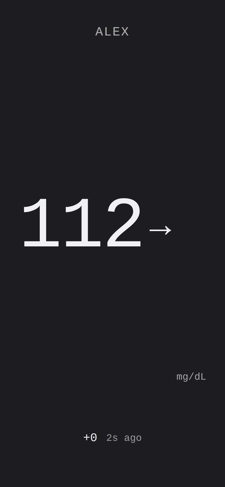

Libre Glucose MQTT Bridge
A Home Assistant add-on that polls your LibreLink Up glucose readings and publishes them to MQTT with automatic sensor discovery — your Glucose sensor appears in Home Assistant within minutes of starting the add-on. Powered by gluco-hub-rs.
Not affiliated with Abbott Laboratories. Unofficial research and self-hosting tool. Use may violate Abbott's LibreLink Up Terms of Service. No warranty. Not for medical decisions, therapy, dosing, or diagnosis.
LibreLink, LibreView, FreeStyle Libre, Libre 2, and Libre 3 are trademarks of Abbott.
Why use it?
Abbott's apps lock your glucose data inside LibreLink Up. This add-on turns that reading into a normal Home Assistant sensor — an entity you fully control:
- Automations & alerts — notify, flash a light, or sound an alarm on highs and lows, with your own thresholds and quiet hours.
- Dashboards & history — chart your glucose beside everything else in your home, with long-term history stored locally.
- Your data, your home — the reading stays on your own broker and HA instance. No cloud dashboard, no subscription, no third party.
- Build on it — as an MQTT entity, the reading drives Node-RED, scripts, voice assistants, and any other integration.
- Set-and-forget — auto-discovery creates the sensor, the add-on reconnects on its own, and missed readings queue, then flush when the connection returns.
The add-on is a thin, auditable wrapper around the open-source gluco-hub-rs: all polling and MQTT logic lives upstream in gluco-hub-rs.
Install
- In Home Assistant, open Settings → Add-ons → Add-on Store.
- Click the ⋮ menu (top right) → Repositories.
- Add:
https://github.com/micschr0/ha-libre-glucose-mqtt - Refresh the store; Libre Glucose MQTT Bridge appears in a new section.
- Click it → Install. Enter your LibreLink Up email and password (and your region, if outside the
EUdefault), then Start.
Requirements
| Requirement | Notes |
|---|---|
| Home Assistant OS or Supervised | Supervisor required; Container installs cannot run add-ons. |
| Mosquitto broker add-on + MQTT integration | The add-on requires an MQTT service to start. |
| LibreLink Up account | At least one active connection (typically a family-share invitation from a Libre 2 or Libre 3 sensor wearer). |
| Architecture | amd64, aarch64 (RPi 3 in 64-bit works). 32-bit ARM (armv7, armhf) and i386 are not supported. |
Your sensor
Once running, the add-on creates a Glucose sensor under the Gluco Hub device (Settings → Devices & Services → MQTT). The state holds the current reading in mg/dL by default (mmol/L if you configure it); entity attributes carry the full payload — mg/dL, mmol/L, trend arrow, and timestamp.
For every option, the sensor attributes, and MQTT topics, see Configuration. For troubleshooting and architecture detail, see Troubleshooting.
Getting help
- Add-on-specific issues (install, configuration, run): ha-libre-glucose-mqtt issues
- Polling / MQTT / LibreLink Up logic: gluco-hub-rs issues
Configuration
Configure the add-on by setting the three required fields — llu_email, llu_password, llu_region — and the Glucose sensor entity sensor.gluco_hub_<client_id>_glucose will appear in Home Assistant.
Your sensor entity ID is sensor.gluco_hub_<client_id>_glucose. With the default client_id: ha, that is sensor.gluco_hub_ha_glucose. Use this ID in every automation and dashboard card.
Architecture
The polling, MQTT publishing, MQTT discovery, and persistent retry queue are all implemented by the upstream gluco-hub-rs binary. This add-on configures and runs that binary — it provides the config.yaml schema, the run.sh entrypoint, and HA Ingress wiring. No polling or MQTT logic lives in this repository.
The add-on never logs it; if you see it in a log, that is a bug — open an issue.
For every option below, default values are chosen so that a fresh install works once you provide llu_email, llu_password, and llu_region.
Configuration
Quick reference
| Option | Type | Default | Description |
|---|---|---|---|
llu_email | string | required | LibreLink Up account email. |
llu_password | string | required | LibreLink Up account password. Never written to MQTT or logs. |
llu_region | enum | EU | Regional API endpoint. Must match your LibreView account region, not your physical location. |
llu_patient_id | string | — | Patient UUID. Leave empty to use the first connection. |
llu_timezone | IANA TZ | UTC | Patient's local timezone. Without this, timestamps appear shifted. Example: Europe/Berlin. |
llu_version | string | — | LibreLink Up app-version header sent to the API. Leave empty to use the upstream default. |
poll_interval_secs | int (30–600) | 60 | Poll interval in seconds. |
device_name | string | — | Friendly device name in HA. Defaults to Gluco Hub (<client_id>). |
glucose_unit | enum | mgdl | Sensor state unit: mgdl for mg/dL, mmol for mmol/L. |
topic_prefix | string | gluco-hub/ha | MQTT topic prefix. Readings publish to <prefix>/glucose. |
client_id | string | ha | MQTT client ID (1–23 chars). Appears in the HA discovery unique ID. |
llu_accounts | list | [] | Named multi-account/multi-patient sources. See multi-account setup. |
log_level | enum | info | Log verbosity. Use debug to troubleshoot. |
Per-option reference
llu_email
Required. LibreLink Up account email. The account that holds the family-share invitation. No default — the add-on refuses to start without this.
Example: anna@example.com.
llu_password
Required. LibreLink Up account password. Stored only in the add-on options database; never written to MQTT or logs. No default.
Example: correct-horse-battery-staple.
llu_region
Regional API endpoint. Must match your LibreView account region — not your physical location. Default: EU.
Valid values: AE, AP, AU, CA, DE, EU, EU2, FR, JP, US, LA, RU, CN.
Use the region of your LibreView account — they often differ. If unsure, open the LibreView app; the region is shown under Account settings.
llu_patient_id
Patient UUID. Required only if your account has multiple connections. Leave empty to use the first connection.
llu_timezone
IANA timezone name of the sensor wearer. Default: UTC. LibreLink Up timestamps are local wall-clock time with no UTC offset; without this, your readings appear time-shifted.
Example: Europe/Berlin.
llu_version
LibreLink Up app-version header sent to the API. Leave empty to use the upstream default. Override only as a last resort when upstream's default is no longer accepted.
poll_interval_secs
Poll interval in seconds. Range: 30–600. Default: 60. Values below 30 waste API calls; LibreLink Up updates every ~60 s.
LibreLink Up updates roughly every 60 seconds; faster polling wastes your API quota and can trigger rate limits.
device_name
Friendly device name shown in Home Assistant. Empty falls back to Gluco Hub (<client_id>).
glucose_unit
Sensor state unit: mgdl for mg/dL, mmol for mmol/L. Default: mgdl. In multi-account mode (llu_accounts) this option does not affect MQTT discovery — discovery always advertises mg/dL regardless.
topic_prefix
MQTT topic prefix. Default: gluco-hub/ha. Readings publish to <prefix>/glucose. With the default, your reading topic is gluco-hub/ha/glucose.
client_id
MQTT client ID. 1–23 characters, alphanumeric, -, or _. Default: ha. Appears in the HA discovery unique ID — changing it orphans previously published entities. In multi-account mode (llu_accounts), this option is ignored and client_id = "ha" is hard-coded.
The generated TOML hard-codes client_id = "ha" and the option is silently ignored.
llu_accounts
List of named LibreLink Up sources for multi-account polling. Default: [] (empty). When non-empty, supersedes the single-account llu_* fields above. Full schema and a worked example are on the multi-account setup page.
When llu_accounts is non-empty, the single-account fields above are superseded and any value you set there is ignored.
log_level
Log verbosity. Default: info. Use debug when troubleshooting LibreLink Up issues. Valid values: trace, debug, info, warn, error.
Sensor
The Glucose sensor appears under the Gluco Hub device in Home Assistant (Settings → Devices & Services → MQTT).
State: current reading in mg/dL (or mmol/L if configured).
Attributes:
| Attribute | Description |
|---|---|
mgdl | Reading in mg/dL. |
mmol | Reading in mmol/L. |
trend | Trend arrow: DoubleDown, SingleDown, FortyFiveDown, Flat, FortyFiveUp, SingleUp, DoubleUp, NotComputable, or OutOfRange. |
timestamp | ISO-8601 timestamp (UTC). |
patient_id | LibreLink Up patient identifier. |
MQTT topics
With the default topic_prefix: gluco-hub/ha, the topics are:
| Topic | Retained | Purpose |
|---|---|---|
gluco-hub/ha/glucose | no | Latest reading (JSON). |
gluco-hub/ha/_health | yes | Liveness: {"online": true/false}. Used as availability_topic. |
gluco-hub/ha/_stats | yes | Per-minute poll/sink summary. Useful for dashboards. |
gluco-hub/ha/_patients | yes | Patient list. JSON array of {id, display_name, is_active}. display_name is abbreviated (e.g. Anna M.). |
homeassistant/sensor/gluco_hub_ha_glucose/config | yes | HA MQTT discovery config. Published after every reconnect. |
For non-default topic_prefix and client_id, substitute <prefix> and <client_id> respectively:
- Reading:
<prefix>/glucose - Discovery:
homeassistant/sensor/gluco_hub_<client_id>_glucose/config
Not affiliated with Abbott Laboratories. Unofficial research and self-hosting tool. Use may violate Abbott's LibreLink Up Terms of Service. No warranty. Not for medical decisions, therapy, dosing, or diagnosis.
LibreLink, LibreView, FreeStyle Libre, Libre 2, and Libre 3 are trademarks of Abbott.
Multi-account setup
The llu_accounts option lets you poll multiple LibreLink Up accounts or patients from a single add-on instance. Each entry in the list is a named source. When llu_accounts is non-empty it supersedes the single-account llu_email, llu_password, llu_region, llu_patient_id, llu_timezone, and llu_version fields.
See Configuration for the full single-account option reference.
Account fields
Each entry in llu_accounts accepts the following fields:
| Field | Type | Required | Description |
|---|---|---|---|
name | string | yes | Source label. Used as the per-source MQTT topic segment — see MQTT topics (per-source) below. Must be unique within the list. |
email | string (email) | yes | LibreLink Up account email for this patient. |
password | string | yes | LibreLink Up account password. Never written to MQTT or logs. |
region | enum | yes | Regional API endpoint. Must match the LibreView account region. Options: AE, AP, AU, CA, DE, EU, EU2, FR, JP, US, LA, RU, CN. |
patient_id | string | no | Patient UUID. Required only if the account has multiple connections. Leave empty to use the first connection. |
timezone | IANA TZ string | yes | The patient's local timezone (e.g. Europe/Berlin). LibreLink Up timestamps are in local wall-clock time with no UTC offset; without this, times appear shifted. |
version | string | no | LibreLink Up app-version header sent to the API. Leave empty to use the upstream default. |
Worked example
Add-on options panel (llu_accounts YAML):
llu_accounts:
- name: alex
email: alex@example.com
password: "hunter2"
region: EU
timezone: Europe/Berlin
- name: sam
email: sam@example.com
password: "correct-horse"
region: US
timezone: America/New_York
patient_id: "00000000-0000-0000-0000-000000000001"
This is an illustrative example — credentials and UUIDs are placeholders. For a gluco-hub check-config-validated example with copy-paste automation YAML, see the Examples page.
MQTT topics (per-source)
This is the most common multi-account support issue. With llu_accounts, the add-on sets per_source = true in the upstream config. Each source publishes to its own topic path — <prefix>/<name>/glucose. The shared <prefix>/glucose topic is not published in multi-account mode — existing automations targeting that topic will receive no data.
For the example above, assuming the default topic_prefix: gluco-hub/ha, the two reading topics are:
| Source | Topic |
|---|---|
alex | gluco-hub/ha/alex/glucose |
sam | gluco-hub/ha/sam/glucose |
Your Home Assistant automations and dashboard cards must target the per-source topic for the patient you want. The shared <prefix>/glucose topic is not published in multi-account mode.
The health, stats, and discovery topics remain at the prefix level (<prefix>/_health, <prefix>/_stats).
Note: Two single-account options do not carry over to multi-account mode. The generated TOML hard-codes
client_id = "ha"and does not passglucose_unitto discovery — readings are always published in mg/dL regardless of theglucose_unitadd-on option.
Status API
Each source also appears in the HTTP Status API. See Status API for the /clock/state and /clock/events endpoints.
Attribution
All polling, MQTT publishing, and per_source topic logic is provided by upstream gluco-hub-rs. This add-on only wires HA Ingress and translates the add-on options into the upstream TOML config — no polling or MQTT logic lives here.
Not affiliated with Abbott Laboratories. Unofficial research and self-hosting tool. Use may violate Abbott's LibreLink Up Terms of Service. No warranty. Not for medical decisions, therapy, dosing, or diagnosis.
LibreLink, LibreView, FreeStyle Libre, Libre 2, and Libre 3 are trademarks of Abbott.
Clock View
The Clock View is a full-screen, real-time glucose display served by upstream
gluco-hub-rs (clock.html, baked into the upstream binary).
This add-on only wires HA Ingress (ingress: true, ingress_port: 8080) so the Clock View appears in the
Home Assistant sidebar. The clock.html file in this repository is a source-of-record reference copy and is
not copied into the Docker image — the upstream binary serves its own bundled version.
Access
Open the Clock View from the Home Assistant sidebar — the add-on's Ingress panel serves it directly.
Access is admin-only by default (as configured in config.yaml).
Direct URL (via Ingress proxy): the sidebar panel opens clock.html relative to the Ingress root.
Query parameters can be appended to tailor the display — see Query parameters below.
Example URL with common parameters:
?preset=phone&unit=mmol&lo=70&hi=180
Query parameters
All parameters are optional. They are read from the URL query string on page load and merged with any
server-embedded config (window.CLOCK_CONFIG) and localStorage values.
| Parameter | Accepted values | Effect |
|---|---|---|
unit | mgdl (default) | mmol | Display unit for glucose readings. |
lo | Number (mg/dL) | Low threshold. Values below this are shown in the low zone (default 70). |
hi | Number (mg/dL) | High threshold. Values above this are shown in the high zone (default 180). |
eink | Presence flag | Enables e-ink mode (same as preset=eink). Applied before first paint to avoid flash. |
preset | eink | wall | phone | small | watch | Forces a specific layout, overriding auto-detection. preset=eink also activates e-ink mode. |
kiosk | Presence flag | Enables kiosk mode: lengthens the long-press needed to open settings to 3 s and, when pin is set, gates settings behind a PIN prompt. The reading is shown immediately on load. |
pin | Digits string | The PIN required to open settings via long-press in kiosk mode (e.g. ?kiosk&pin=1234). |
dark | 0 | 1 | Force light (0) or dark (1) theme. Absence defers to prefers-color-scheme. |
Parameter priority (highest to lowest): URL param → localStorage → server-embedded config → built-in default.
Layouts
The Clock View automatically selects a layout class based on the viewport dimensions. The preset parameter
overrides auto-detection.
Conditions are evaluated in this order; the first match wins, and phone is the fallback when none match:
| Layout class | Auto-detection condition | Typical device |
|---|---|---|
watch | Short side < 200 px | Smartwatch / tiny display |
small | Short side < 400 px | Small phone or compact widget |
wall | Long side > 900 px | Landscape monitor / wall display / TV |
phone | Fallback (no other condition matched) | Phone, tablet, browser window |
?preset=eink activates e-ink mode (see below) instead of a viewport-based layout.
When ?preset= is set to wall, phone, small, or watch, it forces that layout regardless of the actual
viewport — useful for embedding in iframes or dashboard cards of a fixed size.
E-ink mode
Activated by ?eink (presence flag) or ?preset=eink. Both are equivalent.
Behaviour:
- The e-ink preset is applied before first paint to prevent a theme flash.
- SSE updates are debounced (500 ms) to avoid rapid screen refreshes on slow e-ink panels.
- A visible border is drawn around the display when the reading is in the LOW or HYPO zone, providing a high-contrast at-a-glance visual indicator that works on monochrome screens.
Kiosk mode
Activated by ?kiosk (presence flag). Optionally combined with ?pin=<digits>.
- The reading is shown immediately on load — kiosk mode does not hide it behind an overlay.
- Kiosk mode lengthens the long-press that opens the settings panel from 600 ms to 3 seconds, so a casual touch on a wall display does not open settings.
- With
?pin=<digits>set, the 3-second long-press shows a PIN prompt instead of settings; settings open only after the correct PIN is entered (e.g.?kiosk&pin=4321). - Without a
pin, the 3-second long-press opens settings directly — no PIN prompt is shown. - Tapping the display in kiosk mode does not open the detail/sparkline overlay — that tap gesture is disabled in kiosk mode.
Kiosk mode is a display lock only, not an authentication layer — Home Assistant Ingress already authenticates the session before the page is served.
Data
The Clock View pulls live glucose data from three endpoints served by gluco-hub-rs:
| Endpoint | Protocol | Purpose |
|---|---|---|
/clock/state | HTTP GET (JSON) | Initial snapshot — polled once on page load to populate the display immediately |
/clock/events | SSE (EventSource) | Live push stream — delivers reading and keepalive events as they arrive |
/clock/history | HTTP GET (JSON array) | Seed data — up to 3 h of { ts, mgdl } history for the trend graph |
See HTTP Status API for the route signatures and response shapes.
Screenshot
The screenshot below was captured headless from clock.html with mock data (phone layout, mgdl, in-range,
patient "Alex").

Clock View — rendered with mock data (not a live reading)
Not affiliated with Abbott Laboratories. Unofficial research and self-hosting tool. Use may violate Abbott's LibreLink Up Terms of Service. No warranty. Not for medical decisions, therapy, dosing, or diagnosis.
LibreLink, LibreView, FreeStyle Libre, Libre 2, and Libre 3 are trademarks of Abbott.
HTTP Status API
The upstream gluco-hub-rs binary serves the HTTP Status API, binding to 0.0.0.0:8080 (set via GLUCO_HUB__HTTP__BIND in run.sh). This add-on only wires HA Ingress (ingress: true, ingress_port: 8080 in config.yaml) to that listener.
The HA Supervisor Ingress proxy intercepts all requests — routes are not directly reachable from the host. You access them via the add-on's panel in the HA UI, or through the Supervisor-issued Ingress URL.
Data endpoints
These three routes power the Clock View. They are not protected by Bearer auth.
GET /clock/state
Returns a JSON snapshot of the latest glucose reading. The Clock View fetches this once at startup to populate the display before the SSE stream delivers its first event.
{
"mgdl": 112,
"trend": "Flat",
"ts": 1750000000000,
"delta": 2,
"patient": "Alex"
}
| Field | Type | Description |
|---|---|---|
mgdl | integer | Glucose value in mg/dL |
trend | string | One of: DoubleDown, SingleDown, FortyFiveDown, Flat, FortyFiveUp, SingleUp, DoubleUp, NotComputable, OutOfRange |
ts | integer | Unix timestamp in milliseconds |
delta | integer | Change since previous reading (mg/dL), may be null |
patient | string | Display name, may be absent |
GET /clock/events
Server-Sent Events stream. The Clock View opens an EventSource connection to this endpoint for live updates.
Named events:
| Event | Payload | Description |
|---|---|---|
reading | JSON (same shape as /clock/state) | New glucose reading arrived |
keepalive | (empty) | Periodic heartbeat to keep the connection alive |
Query parameters:
| Parameter | Value | Description |
|---|---|---|
eink | 1 | Hint to the server that the client is an e-ink display. Set automatically by the Clock View when it detects e-ink mode (?eink or ?preset=eink). |
Example connection:
GET /clock/events?eink=1
Accept: text/event-stream
The Clock View reconnects automatically with exponential back-off (2 s → 30 s cap) on any connection error.
GET /clock/history
Returns a JSON array of recent readings used to seed the Clock View's sparkline on first load. This call is best-effort — the Clock View swallows any error silently and draws the sparkline from SSE events only if history is unavailable.
[
{ "ts": 1749999940000, "mgdl": 108 },
{ "ts": 1750000000000, "mgdl": 112 }
]
| Field | Type | Description |
|---|---|---|
ts | integer | Unix timestamp in milliseconds |
mgdl | integer | Glucose value in mg/dL |
The array covers approximately the last 3 hours (up to 180 points at 1-minute intervals).
Caching
All data endpoint responses carry Cache-Control: no-store. This prevents browsers and intermediate proxies from ever serving a stale glucose value — every request goes to the live server.
Other endpoints
The following endpoints are confirmed from the upstream gluco-hub-rs README:
| Path | Auth | Response |
|---|---|---|
GET /healthz | public | {"status":"ok","version":"…"} |
GET /metrics | public | Prometheus text exposition format |
GET /glucose/latest | optional Bearer | Latest cached reading, or 503 + API001 if no reading is available |
Bearer auth: set GLUCO_HUB__HTTP__BEARER_TOKEN in the add-on configuration to require a token for /glucose/* routes. The /healthz and /metrics endpoints remain public regardless.
X-Disclaimer header: every response from gluco-hub-rs carries X-Disclaimer: not-for-medical-use — the canonical machine-readable disclaimer signal.
GET /glucose/latest response shape (upstream-confirmed):
{
"patient_id": "00000000-0000-0000-0000-000000000000",
"source_id": "llu",
"timestamp": "2025-01-01T12:00:00Z",
"glucose_mgdl": 112,
"trend": "Flat"
}
Note: the /clock/* routes use an internal shape (mgdl, ts as Unix-ms, delta, patient) optimised for the Clock View, while /glucose/latest uses the public API shape (glucose_mgdl, ISO 8601 timestamp, patient_id).
For the full and authoritative endpoint list, see the upstream gluco-hub-rs documentation.
See also
- Clock View — the visual display that consumes the data endpoints documented here
- Configuration — add-on options including
poll_interval_secs,glucose_unit, andtopic_prefix
Not affiliated with Abbott Laboratories. Unofficial research and self-hosting tool. Use may violate Abbott's LibreLink Up Terms of Service. No warranty. Not for medical decisions, therapy, dosing, or diagnosis.
LibreLink, LibreView, FreeStyle Libre, Libre 2, and Libre 3 are trademarks of Abbott.
Examples
Copy-paste examples for the MQTT-discovered Glucose sensor. See Configuration for the full sensor and attribute reference.
EX-01 — Alert automation
The automation below fires a persistent notification and a mobile push when glucose drops below 70 or rises above 180. Both triggers watch the sensor state — the current glucose reading in your configured unit.
alias: Glucose high / low alert
description: >
Fires a persistent notification and mobile push when glucose
leaves the 70–180 mg/dL range.
trigger:
- platform: numeric_state
entity_id: sensor.gluco_hub_ha_glucose
below: 70
id: low
- platform: numeric_state
entity_id: sensor.gluco_hub_ha_glucose
above: 180
id: high
action:
- choose:
- conditions:
- condition: trigger
id: low
sequence:
- action: persistent_notification.create
data:
title: "Glucose low"
message: >
Glucose is {{ states('sensor.gluco_hub_ha_glucose') }}
— below 70.
- action: notify.mobile_app_your_phone
data:
title: "Low glucose"
message: >
{{ states('sensor.gluco_hub_ha_glucose') }} — below 70
- conditions:
- condition: trigger
id: high
sequence:
- action: persistent_notification.create
data:
title: "Glucose high"
message: >
Glucose is {{ states('sensor.gluco_hub_ha_glucose') }}
— above 180.
- action: notify.mobile_app_your_phone
data:
title: "High glucose"
message: >
{{ states('sensor.gluco_hub_ha_glucose') }} — above 180
mode: single
sensor.gluco_hub_ha_glucose uses the default client_id: ha. Replace ha with your configured client_id value — the entity name follows the pattern sensor.gluco_hub_<client_id>_glucose. Replace notify.mobile_app_your_phone with your device's notify service (Settings → Devices & Services → Mobile App).
The sensor state is in your configured unit (mgdl by default; mmol if glucose_unit: mmol). If you use mmol/L, adjust the thresholds: below: 3.9 (low) and above: 10.0 (high) are the mmol/L equivalents.
The triggers fire on the sensor state — the current glucose reading. Do not use attribute: mgdl in the trigger; the state already holds the value in your configured unit.
Attribution. The
sensor.gluco_hub_*_glucoseentity is published by the upstreamgluco-hub-rsbridge via MQTT discovery. This add-on wires HA Ingress and translates add-on options into the upstream config.
EX-02 — Dashboard gauge card
Add this to a Lovelace dashboard view with the + Add card button (no HACS or custom card required).
type: gauge
entity: sensor.gluco_hub_ha_glucose
name: Glucose
min: 40
max: 300
needle: true
severity:
green: 70
yellow: 180
red: 40
The severity map sets the lower bound of each colored band. With the values above the gauge shows: red from 40 → 70, green from 70 → 180, yellow from 180 → 300. Replace sensor.gluco_hub_ha_glucose using the same <client_id> convention as in EX-01.
Attribution. The Glucose sensor is published by the upstream
gluco-hub-rsbridge via MQTT discovery. This add-on wires HA Ingress and translates add-on options into the upstream config.
EX-03 — Multi-account configuration
For polling multiple LibreLink Up accounts, use the llu_accounts list. See Multi-account setup for the full field reference.
Add-on options (llu_accounts YAML):
llu_accounts:
- name: alex
email: alex@example.com
password: "hunter2"
region: EU
timezone: Europe/Berlin
- name: sam
email: sam@example.com
password: "correct-horse"
region: US
timezone: America/New_York
patient_id: "00000000-0000-0000-0000-000000000001"
Per-source topic topology. With llu_accounts the add-on sets per_source = true in the upstream config. Each source publishes to its own path:
| Source | Reading topic |
|---|---|
alex | gluco-hub/ha/alex/glucose |
sam | gluco-hub/ha/sam/glucose |
The shared <prefix>/glucose topic is not published in multi-account mode. Target the per-source entity in your automations and dashboard cards (e.g. sensor.gluco_hub_ha_alex_glucose).
Resulting validated TOML (generated by the add-on at startup):
[poller]
interval_secs = 60
[http]
bind = "0.0.0.0:8080"
[state]
dir = "/data/state"
[sink.mqtt]
broker_host = "mqtt.local"
broker_port = 1883
username = "mosquitto"
password = "mqttpass"
topic_prefix = "gluco-hub/ha"
client_id = "ha"
discovery_enabled = true
per_source = true
[source.sources.alex]
email = "alex@example.com"
password = "hunter2"
region = "EU"
timezone = "Europe/Berlin"
[source.sources.sam]
email = "sam@example.com"
password = "correct-horse"
region = "US"
timezone = "America/New_York"
patient_id = "00000000-0000-0000-0000-000000000001"
The MQTT sink section uses broker_host / broker_port — these are the field names required by the gluco-hub config loader. Bare host / port keys are rejected by check-config with [CFG001] missing configuration field "sink.mqtt.broker_host".
Multi-account limitations. The generated TOML hard-codes client_id = "ha" and does not include discovery_unit — so MQTT discovery always advertises mg/dL regardless of your glucose_unit setting. The client_id and discovery_unit single-account options are not carried into multi-account mode.
Validation. The TOML above was validated with gluco-hub check-config against the pinned upstream image ghcr.io/micschr0/gluco-hub:2026.621.0 and returned configuration ok.
Not affiliated with Abbott Laboratories. Unofficial research and self-hosting tool. Use may violate Abbott's LibreLink Up Terms of Service. No warranty. Not for medical decisions, therapy, dosing, or diagnosis.
LibreLink, LibreView, FreeStyle Libre, Libre 2, and Libre 3 are trademarks of Abbott.
Troubleshooting
Add-on refuses to start — No MQTT service available.
Install the Mosquitto broker add-on and configure the MQTT integration (Settings → Devices & Services → Add Integration → MQTT). Then restart this add-on.
Sensor never appears.
- Confirm Mosquitto is running.
- Set
log_level: debugand look formqtt sink configuredanddiscovery_enabled = truein the log. - Use MQTT's Listen to topic feature: subscribe to
homeassistant/sensor/+/config. The discovery message should arrive within ~10 seconds of starting.
LibreLink Up login fails with [LLU003].
Wrong credentials, wrong region, or the password was escaped incorrectly by the HA UI. The region must match your LibreView account, not your physical location.
Sensor values are time-shifted.
Set llu_timezone to the patient's IANA timezone (e.g. Europe/Berlin). LibreLink Up timestamps are in local wall-clock time with no UTC offset.
My platform is not in the install dropdown.
V1 supports amd64 and aarch64. 32-bit ARM (armv7, armhf) and i386 are not supported — follow gluco-hub-rs for status.
Architecture
LibreLink Up API
│ HTTPS
▼
┌──────────────────────────────────────┐
│ libre-glucose app │
│ ┌────────────────────────────────┐ │
│ │ run.sh (bashio) │ │
│ │ • read /data/options.json │ │
│ │ • bashio::services mqtt │ │
│ │ • export GLUCO_HUB__* │ │
│ └────────────────────────────────┘ │
│ ┌────────────────────────────────┐ │
│ │ /usr/local/bin/gluco-hub run │ │
│ │ LLU-Source → MQTT-Sink (+DLQ) │ │
│ └────────────────────────────────┘ │
└──────────────────────────────────────┘
│ MQTT (plaintext, internal)
▼
Mosquitto app
│
▼
Home Assistant entities
This add-on is a thin Bash wrapper around gluco-hub-rs. No polling or MQTT logic lives here — only the HA manifest, run.sh, and this documentation. This add-on only wires HA Ingress to it.
Not affiliated with Abbott Laboratories. Unofficial research and self-hosting tool. Use may violate Abbott's LibreLink Up Terms of Service. No warranty. Not for medical decisions, therapy, dosing, or diagnosis.
LibreLink, LibreView, FreeStyle Libre, Libre 2, and Libre 3 are trademarks of Abbott.
Changelog
The full changelog is maintained alongside the add-on source at
libre-glucose/CHANGELOG.md.
Security Policy
Scope
This repository ships the Home Assistant app wrapper (formerly
known as an add-on) around the upstream gluco-hub-rs
Rust binary. Two repositories are relevant when reporting security
issues, and you should pick the right one:
| Symptom | Report here |
|---|---|
| Glucose-data parsing / LibreLink-Up authentication / MQTT publish logic / Nightscout / DLQ / HTTP API | gluco-hub-rs SECURITY.md — these are upstream concerns |
HA Supervisor wrapper: app manifest (config.yaml), AppArmor profile (apparmor.txt), run.sh entrypoint, Dockerfile, CI workflows | This repo (see below) |
If you are unsure, file here — we'll route upstream as needed.
Reporting a vulnerability
Do not open a public GitHub issue for security-sensitive reports.
Use GitHub's private vulnerability reporting — the discussion stays auditable in-platform and triggers a GitHub Security Advisory on confirmation.
Please include:
- A description of the issue and its impact.
- Reproduction steps, including any
config.yamloptions or HA Supervisor versions involved. - Whether the issue is exploitable from outside the Mosquitto add-on's
internal network (
hassiobridge) or only from co-located add-ons.
Disclosure
We aim to acknowledge reports within 5 working days and to ship a fix
or a documented mitigation within 30 days for confirmed issues.
Coordinated disclosure with the upstream gluco-hub-rs maintainers is
the default for any issue that touches polling or wire-format logic.
Not a medical device, not affiliated with Abbott
This app and its upstream are research / self-hosting tools, not medical devices. They are not for medical decisions, therapy, dosing, or diagnosis. They poll Abbott's LibreLink Up API without any partnership; use may violate Abbott's LibreLink Up Terms of Service, and the maintainers accept no liability for account suspension or any other consequence. Use at your own risk.
Issues that report "the glucose number is wrong" without a separate security implication should be filed as bugs (issue tracker), not as security advisories. ToS or contractual concerns with Abbott are out of scope for this repository — those are between the user and Abbott.
Supported versions
We ship security fixes for the latest published app release only. The
app version mirrors the bundled upstream gluco-hub CalVer tag exactly,
so a fix shipped as app v2026.M.0 rides on gluco-hub v2026.M.0.